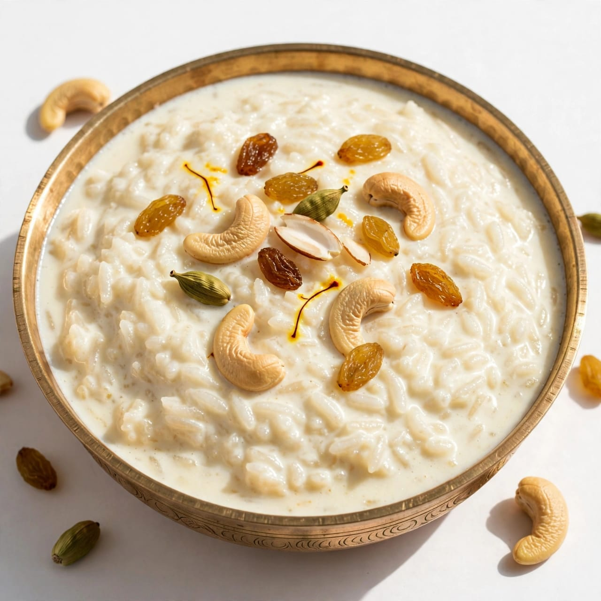
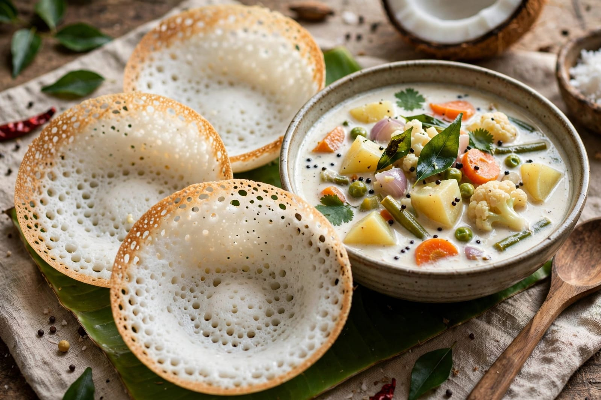
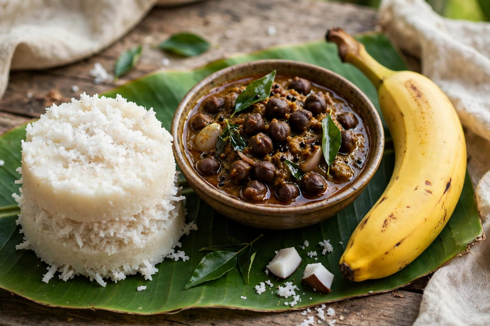

About Thrissur Pooram
Thrissur Pooram is one of the most famous and colourful festivals of Kerala. It is celebrated every year at the Vadakkunnathan Temple in Thrissur. The festival is known for its grand celebrations, decorated elephants, traditional music and colourful umbrellas. Large numbers of people visit Thrissur to enjoy this spectacular cultural event. The festival brings together people from different communities and showcases the rich traditions of Kerala.
A major attraction of Thrissur Pooram is the beautifully decorated elephants. The elephants are traditionally decorated with golden ornaments and colourful decorations. Traditional percussion groups perform music using instruments such as chenda, making the atmosphere lively and energetic. The colourful display of umbrellas and the rhythmic music are important parts of the celebration.
Thrissur Pooram is also an important cultural event that represents the artistic heritage of Kerala. The festival includes traditional performances, processions and fireworks. People gather together to celebrate the occasion with great enthusiasm. The festival is admired for its combination of religious traditions, music, art and cultural celebrations, making it an important festival of Kerala.
Special Foods

Payasam
Payasam is a traditional sweet dish commonly prepared during festivals in Kerala.

Appam
Appam is a popular Kerala dish made from fermented rice batter.

Puttu
Puttu is a traditional steamed rice dish enjoyed in Kerala.